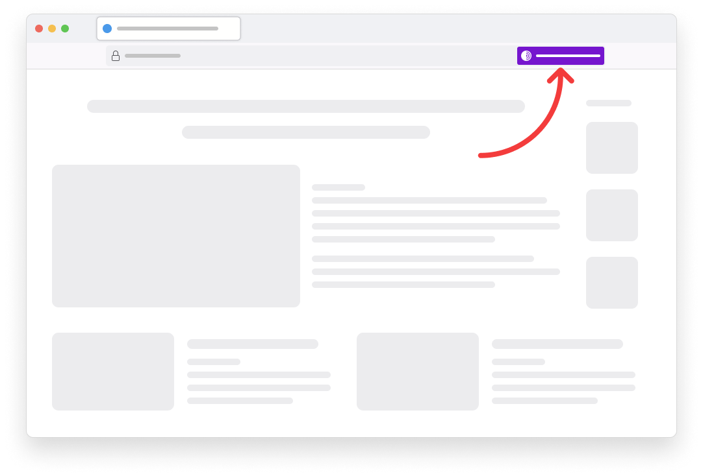

A Directory Of Trustworthy Onion Sites
Scroll Down
Find The Onion Location
Even though the goal of Uncensored Domains is to make it easy to find trustworthy onion sites, you should know how to find the onion location through Tor Browser. Just go to a website, and if they have an available onion address, you'll see a purple badge in the browser URL bar.
Some sites may not have this feature enabled yet, in that case you may need to search for it.
Now, try finding the onion location of The New York Times website by visiting the site in Tor Browser.
Onion Sites
📰 News
- BBC https://www.bbcnewsd73hkzno2ini43t4gblxvycyac5aw4gnv7t2rccijh7745uqd.onion/
- New York Times https://www.nytimesn7cgmftshazwhfgzm37qxb44r64ytbb2dj3x62d2lljsciiyd.onion/
- ProPublica http://p53lf57qovyuvwsc6xnrppyply3vtqm7l6pcobkmyqsiofyeznfu5uqd.onion/
- The Intercept https://27m3p2uv7igmj6kvd4ql3cct5h3sdwrsajovkkndeufumzyfhlfev4qd.onion/